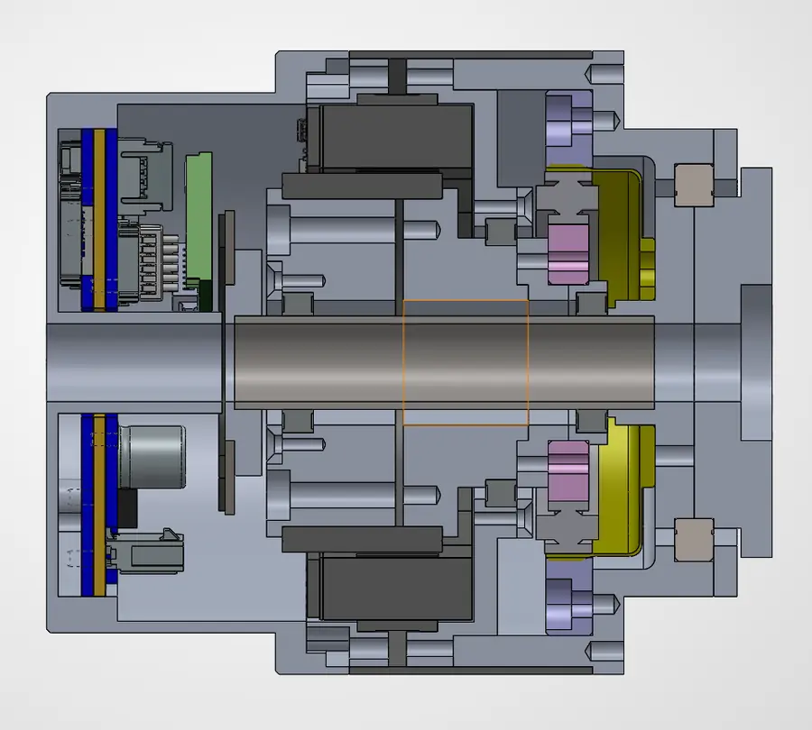
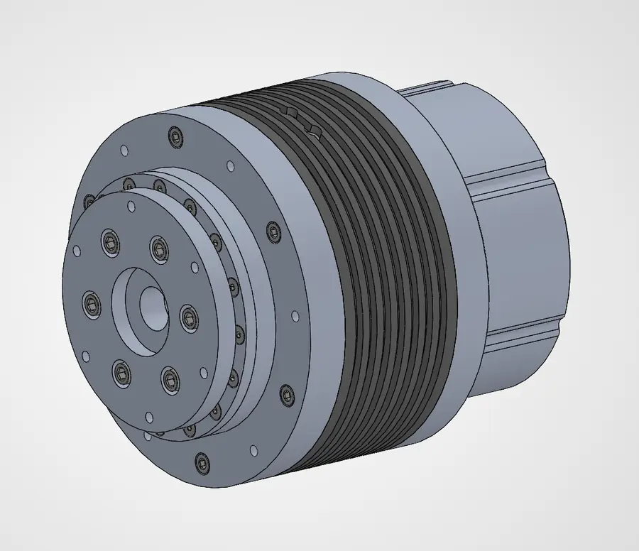
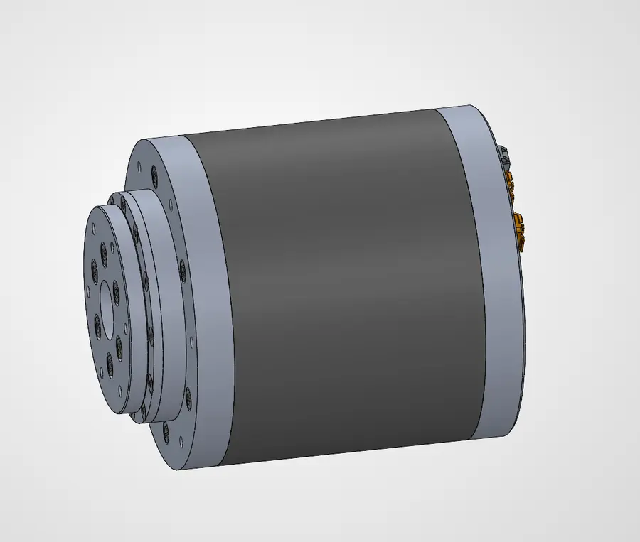
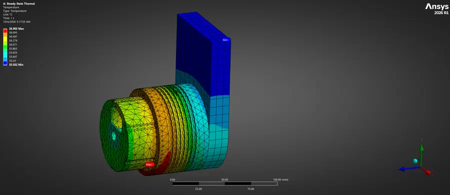
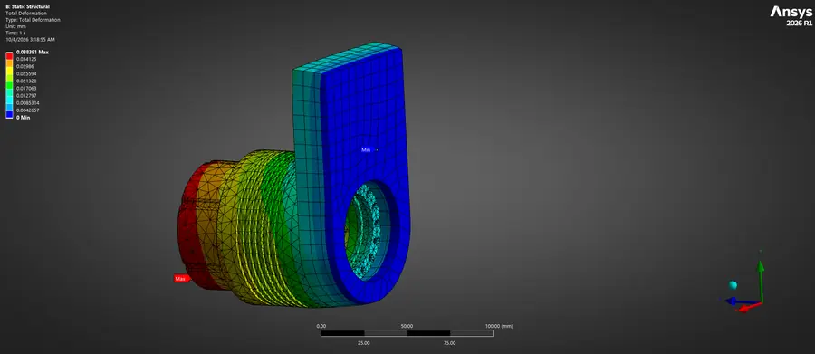

Every arm I've built so far was limited by its actuators: affordable motors bolted to separate gearboxes, with backlash, mass and wiring to work around. This project is the module I wish I'd had, a compact, high-torque joint that combines motor, reduction, sensing and drive electronics so it can drop into a robot as a complete joint.
Architecture
- A motor built into the structure. The motor is a frameless inrunner BLDC. A frameless motor is just a stator and a rotor, with no housing or bearings of its own. The rotor mounts directly to the actuator's shaft and the stator seats in the housing, which removes a redundant structure and a coupling and makes the module shorter and lighter.
- Near-zero-backlash reduction. The gearbox is a strain-wave drive: an elliptical wave generator flexes a thin toothed flexspline inside a rigid circular spline, giving a high reduction in a single compact stage with near-zero backlash.
- Sensing on both sides of the gearbox. One encoder on the motor side for commutation and velocity, one on the output for true joint position. With both, the controller can see what happens across the gearbox: wind-up, compliance and lost motion. My BAMF test rig relied on the same two-sided view to identify backlash.
- On-board position control. The motor driver lives inside the module, so the joint needs only power and commands and closes its own position loop. Integration into a robot becomes mostly mechanical.
- Structure that doubles as a heat path. Using aluminum for most of the structure keeps the module light and stiff and gives the motor's heat a path out. The result is high torque density and low weight for the torque it delivers.



Thermal & structural simulation
I validated the design in Ansys Mechanical with a coupled thermal–structural workflow. A steady-state thermal study solves for the temperature field the motor's heat produces, and that field is then imported as a load into a static structural study. The structural results therefore include thermal expansion along with the mechanical loads on the output.
In the analyzed case, the entire module stays within a narrow band of 35.0–36.9 °C, peaking at the sensor-side stator mount. The aluminum structure keeps the temperature nearly uniform, so there are no hot spots for the electronics or bearings to sit next to.


Status
The actuator is in active development this semester. Prototype builds and bench results will appear in the revision table below as they happen.